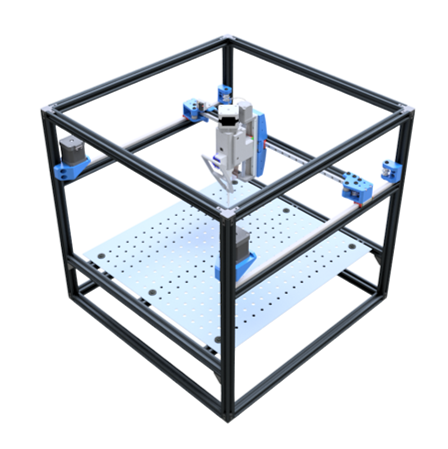
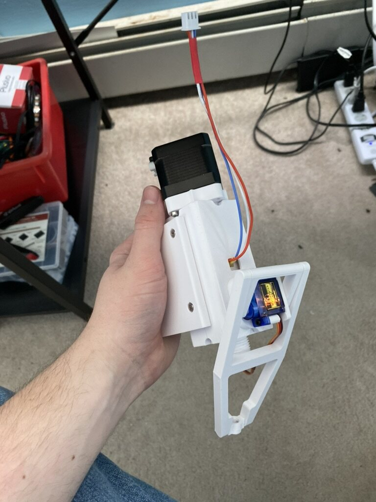
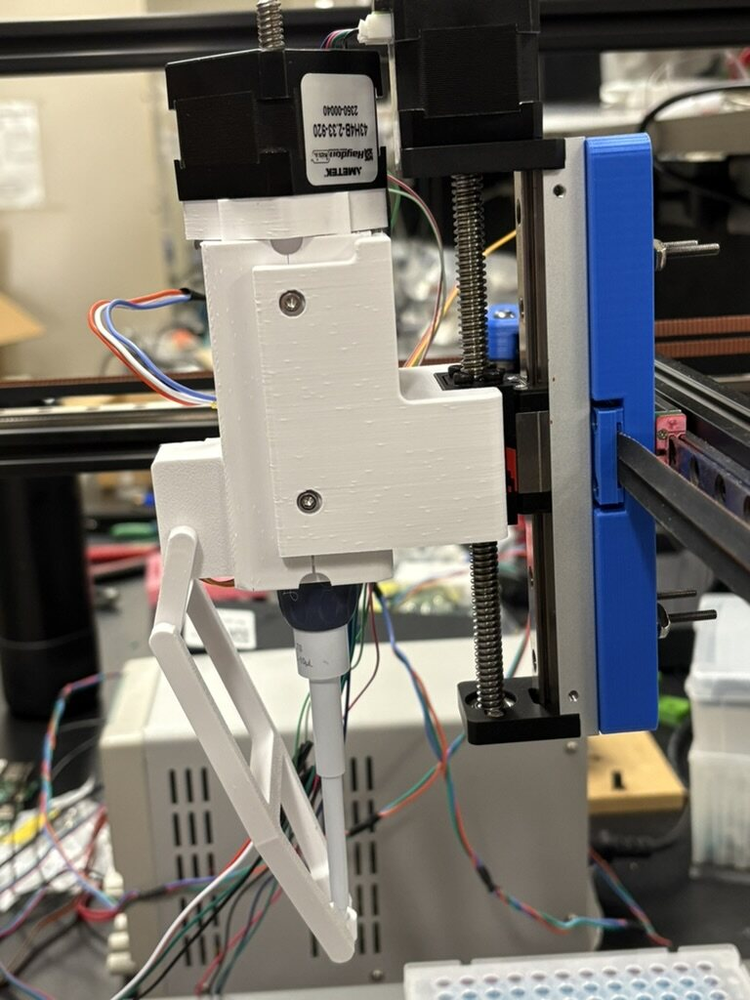
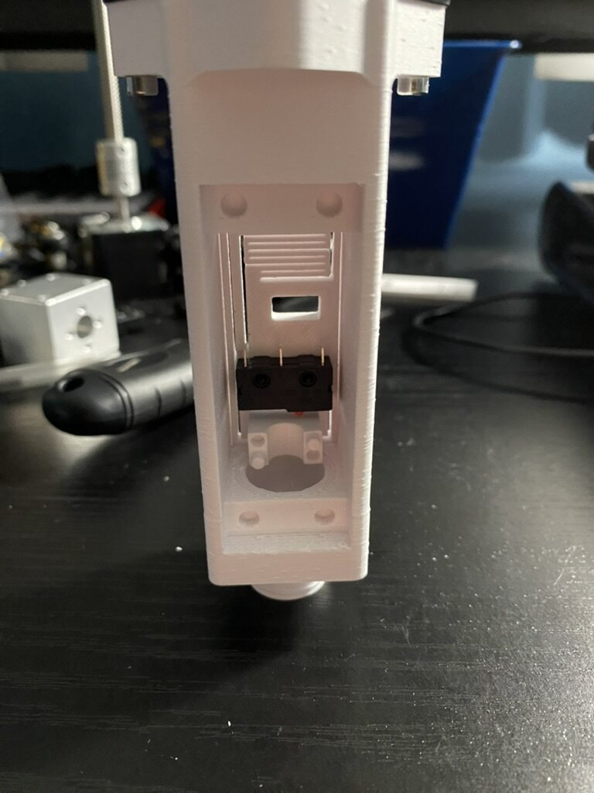
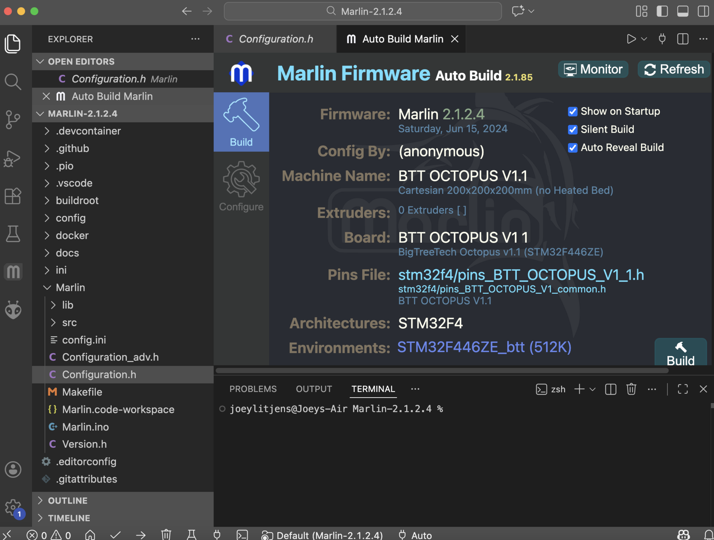

Stony Brook University
Liquid Handling Robot
Key Skills
- Mechanical Design
- Firmware Development
- Motion Control
- 3D Printing
- Systems Integration
Stony Brook University
Key Skills
A neurobiology lab needed a way to automate PCR liquid handling without the cost of a commercial system. I built one from scratch, using a modified open-source 3D-printer gantry as the mechanical base, with a custom pipette end effector and embedded controls.
The base is a CoreXY belt-driven gantry (modified from the SimpleCore open-source 3D printer design) giving a 270 mm × 270 mm workspace, with a lead-screw Z-axis stage mounted directly on the carriage. A BTT Octopus V1.1 (STM32F4) running customized Marlin firmware drives everything, with TMC2209 drivers for smooth, repeatable microstepping motion.

The end effector is a retrofit of a COTS Rainin pipette (2–10 µL range), actuated by a captive linear stepper motor through a cap nut on the plunger, 2 µm per step. The housing and internal flexures are 3D printed, homed against a micro limit switch, with a servo-driven slider-crank linkage for tip ejection.



Beyond the mechanical build, the software scope was mostly firmware: I customized Marlin's pin mappings to support the pipette's non-standard actuator, mapped onto an unused extruder axis, along with the other lab-specific I/O, and built the system on a G-code-style motion protocol.

Homing and limit-switch behavior tested and tuned directly on the hardware before trusting it near actual samples:
5% dispensing repeatability at 2–10 µL, built for under $3,000 against a $10,000+ commercial baseline.